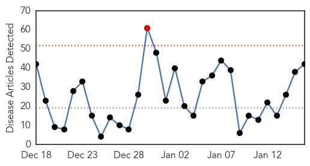

Influenza
30-Day Web Trend
1 alerts, 0 warnings

30-Day Twitter Trend
1 alerts, 0 warnings

Article Locations
Article Confidences

Top Articles:
- 1.000
- Oklahoma Flu Deaths Rise By Nine
- 0.999
- Officials: 85 deaths this flu season, higher than 10-year total
- 0.999
- Flu vaccine being developed for all influenza types
- 0.998
- State health officials advise getting flu shot
- 0.998
- Flu Season Hitting Napa, Bay Area
- 0.998
- Napa is approaching height of flu season
- 0.997
- Protect yourself from the flu
- 0.997
- 19 more children die as flu season takes toll
- 0.997
- Update: DPH: Flu Deaths Rise to 16 in Delaware
- 0.997
- Flu shot 23 percent effective this season
- 0.996
- Two Flu-Related Deaths Reported At Children’s Mercy Hospital
- 0.994
- Flu vaccine not working well; only 23 percent effective
- 0.993
- Untitled Article
- 0.993
- Eight flu-related deaths reported in St. Joseph County as offici
- 0.993
- As flu season gets underway, US health authorities caution that flu shot is only 23 percent effective
- 0.993
- Flu Threat Expected to Continue
- 0.992
- Flu surge detected in Toronto
- 0.986
- Commentary: Fight flu by staying home
- 0.986
- Flu Shots Ineffective, Over 75 Percent Of Vaccines Will Not Work Due To Viral Mutations
- 0.984
- Flu Cases Up in NYC Amid Reports of Ineffective Vaccine
- 0.984
- Bay Area Sees Spike In Flu Cases, 4 Deaths Reported « CBS San Francisco
- 0.983
- Cracking the vaccine conundrum
- 0.981
- Flu shot effectiveness is lower while number of Hoosiers dying from flu increases
- 0.979
- Fighting Flu: When You Should Go to the Hospital
- 0.978
- Changing flu strain swarms the nation and relief can’t come fast enough
- 0.970
- Santa Cruz County fighting off flu; shots available
- 0.968
- CDC: This year's flu vaccine provides only minimal protection fr
- 0.967
- In Minnesota, number of flu cases suggests season has peaked
- 0.964
- Employee Influenza Vaccination Clinic at BU Occupational Health Center
- 0.952
- Bird flu in Oregon poses no danger to humans, but backyard chickens beware
- 0.950
- More than three-quarters of this year's flu shots were ineffective
- 0.950
- CDC: Flu vaccine only 23 percent effective
- 0.948
- 26-year-old newlywed dies from flu, sepsis complications
- 0.945
- Mac researchers may have found a way to outsmart the flu virus
- 0.943
- Organizations team up to fight the spread of flu at Sundance Film Festival
- 0.931
- Flu vaccine this season one of least effective in years, CDC says
- 0.910
- Wisconsin newlywed dies less than week after contracting flu
- 0.871
- Fighting the flu on northern reserves
- 0.793
- South Korea to Impose Poultry Movement Ban
- 0.705
- Eastern Iowa Breaking News, Weather, Closings
- 0.700
- WCCT Global collaborates with NIAID for Influenza Challenge Research
- 0.598
- Three snowmobiles, equipment stolen from Perry home
Top Tweets:
-
No tweets found for Jan 16, 2015
Unknown
30-Day Web Trend
0 alerts, 0 warnings

30-Day Twitter Trend
2 alerts, 0 warnings

Article Locations
Article Confidences

Top Articles:
- 0.997
- The Rocky Mount Telegram
- 0.995
- CDC Report: Only 23 percent of Flu Vaccine Showing Good Results
- 0.993
- Officials: Indiana flu season rated “severe”
- 0.990
- Two more flu-related deaths as cases continue to fall in Dallas County
- 0.989
- Officials: Indiana flu season rated “severe”
- 0.987
- Flu Shot 77 Percent Ineffective This Year
- 0.979
- Flu vaccine only 23% effective
- 0.975
- CDC: Flu shot not as effective this season
- 0.975
- CDC: Flu shot not as effective this season
- 0.970
- Flu Season 2014-2015: Current Vaccine Shot Only 23 Percent Effective, CDC Warns : US News : Latin Post
- 0.968
- KC children's hospital reports 2 flu deaths
- 0.965
- Enterovirus D68 seen in cancer, stem cell transplant patients
- 0.963
- Opryland outbreak may be Norovirus
- 0.959
- Two Children’s Mercy patients die of flu
- 0.958
- Flu Closes Schools, Flusters Hospitals Nationwide
- 0.955
- Woman dies of bird flu in Egypt's Assiut
- 0.946
- Woman dies of bird flu in Egypt, third death this year
- 0.942
- As Flu Deaths Rise In Kentucky, Schools Take Precautions - LEX18.com
- 0.935
- Health officials encourage vaccines as flu season continues
- 0.928
- CDC: Flu Shot Only 23% Effective - Story
- 0.917
- Chicago Tribune
- 0.917
- Chicago Tribune
- 0.917
- Chicago Tribune
- 0.917
- Chicago Tribune
- 0.917
- Chicago Tribune
- 0.917
- Chicago Tribune
- 0.910
- The world windows to Thailand
- 0.907
- Rare Virus Discovered in Common Tick
- 0.883
- Avian Flu Outbreak Feared. Taiwan Kills 160,000 Birds
- 0.874
- 'We’re Testing About 20 People a Day': Inside the Cambodian Village Devastated by an HIV Outbreak
- 0.872
- Hospitals Lower Health Care-Associated Infections
- 0.866
- AFP photographer wounded in Charlie Hebdo clashes in Karachi
- 0.866
- Russia regrets Ukraine's move to rotate troops in east
- 0.866
- Toledo school closed for cleaning amid flu-like illnesses
- 0.863
- Colds, flu spreading across western Massachusetts
- 0.834
- WHO sounds alarm on Ukraine's creaking health system
- 0.832
- Almost 1.5 Mln Need Humanitarian Assistance in Eastern Ukraine, WHO Reports
- 0.814
- Flu threat poses a new test for Varadkar
- 0.810
- WHO Sounds Alarm on Ukraine's Creaking Health System — Naharnet
- 0.794
- China Panda Virus Kills Two Pandas, Leaves Third In Critical Condition
- 0.789
- Jimmy Carter is about to end Guinea worm disease
- 0.783
- Major floods in Malawi, Mozambique force thousands to flee their homes – UN - Malawi
- 0.734
- What's Going Around: strep throat and upper respiratory infectio
- 0.727
- International aid for flood stricken Mozambique and Malawi
- 0.725
- Hope for universal flu vaccine within 5 years: study
- 0.725
- The World On Arirang
- 0.688
- Malaysia General Business Sports and Lifestyle News
- 0.672
- Local officials push for HPV Vaccinations
- 0.668
- Questions and answers about Sri Lanka mystery kidney disease
- 0.656
- Two die of H7N9 bird flu in China's Fujian
Showing top 50 articles...
Top Tweets:
- 0.736
- «Algún día es hoy» decía en un sitio por ahí.